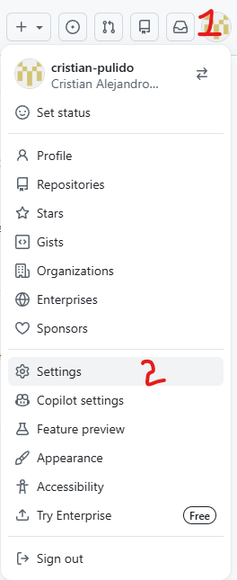
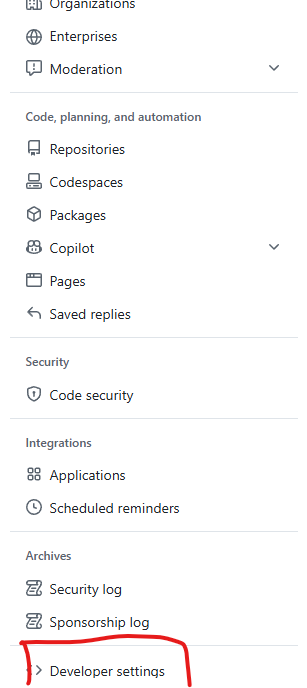
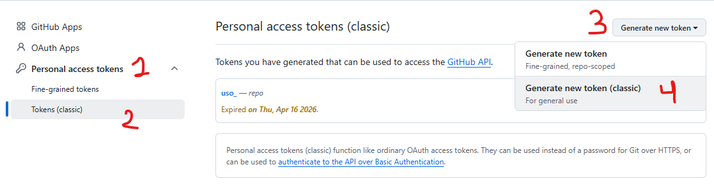
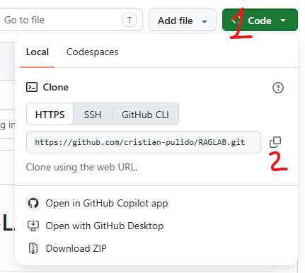

Diseño de agentes de I.A. RAG-LAB
La base técnica antes de entrar a RAG, embeddings y agentes.
Este módulo cubre dos sesiones de 4 horas. El objetivo no es construir un chatbot en la primera clase, sino lograr que todo el grupo tenga las herramientas instaladas, su fork listo, su proyecto en local y un entorno funcional para empezar a programar.
Resultados del módulo
Qué debe saber hacer cada estudiante al finalizar
- Crear y configurar correctamente una cuenta de GitHub.
- Instalar Git, Miniconda y PyCharm.
- Hacer un fork del repositorio del curso.
- Descargar el fork personal al computador desde PyCharm.
- Crear el entorno `RAGLAB` a partir del archivo `RAGLAB.yml`.
- Usar el intérprete correcto del proyecto en PyCharm.
- Ejecutar y modificar scripts básicos en Python.
- Guardar cambios con Git y subirlos a GitHub.
Herramientas base
Qué papel cumple cada herramienta en el curso
Python
Es el lenguaje de programación base con el que construiremos ejercicios, scripts y proyectos durante el curso.
Miniconda
Nos permite gestionar versiones de Python, la instalación de paquetes y la configuración técnica del proyecto de forma más estable.
Git y GitHub
Se usan para control de versiones, respaldo del trabajo y seguimiento ordenado de los avances de cada estudiante.
PyCharm
Será el entorno de desarrollo principal para abrir el proyecto, descargar el fork, ejecutar scripts y trabajar con GitHub.
Plan sugerido
Agenda detallada para 8 horas
Esta agenda muestra de forma general qué se trabajará en las dos sesiones del módulo.
Preparación del entorno de trabajo
- Presentación general de las herramientas del curso.
- Creación de cuenta de GitHub.
- Instalación de Git y configuración inicial.
- Creación del fork en GitHub.
- Instalación de Miniconda.
- Revisión de terminales y primeras verificaciones.
Trabajo local y bases de Python
- Instalación de PyCharm.
- Conexión de PyCharm con GitHub usando token.
- Descarga del fork personal al computador.
- Creación del entorno con `conda env create`.
- Selección del intérprete en PyCharm.
- Variables, tipos, condicionales, ciclos y funciones.
- Ejecución de ejercicios y práctica integradora.
Paso 1
Cuenta de GitHub e instalación de Git
En este curso usaremos Git para guardar el historial de cambios del proyecto en el computador y GitHub para almacenar una copia en línea del repositorio. Esto permite que cada estudiante tenga respaldo, control de versiones y un espacio claro donde entregar sus avances.
Git
Registra los cambios del proyecto y permite crear versiones del trabajo a medida que avanza el curso.
GitHub
Guarda el repositorio en línea, aloja el fork personal y permite sincronizar los cambios del estudiante.
- Crea tu cuenta en github.com.
- Confirma tu correo y completa tu perfil básico.
- Instala Git desde git-scm.com/downloads.
- Abre una terminal y configura tu nombre y correo.
Dónde se hace esto: la cuenta se crea en el navegador. Los comandos se
ejecutan en una terminal del computador del estudiante. En Windows puede ser
PowerShell o Git Bash. En macOS o Linux se usa
Terminal.
Configuración inicial de Git
git config --global user.name "Tu Nombre"
git config --global user.email "tu-correo@ejemplo.com"
git config --global init.defaultBranch main
git config --listPaso 2
Fork del repositorio del curso
Un fork es una copia del repositorio original dentro de la cuenta de GitHub del estudiante. Sirve para que cada persona trabaje sobre su propia versión del proyecto sin afectar directamente el repositorio del curso.
Repositorio original del curso: github.com/cristian-pulido/RAGLAB
- Entrar al repositorio original del curso en GitHub.
- Hacer clic en Fork.
- Verificar que apareció una copia en la cuenta personal.
- Confirmar que el nombre del repositorio en la cuenta del estudiante es `RAGLAB`.


Dónde se hace esto: este paso ocurre completamente en el navegador. La
copia local del proyecto no se hace aquí; se hará en el paso de PyCharm.
Paso 3
Instalación de Miniconda
Python es el lenguaje de programación base del curso. Miniconda nos ayuda a gestionar la instalación de Python y las dependencias del proyecto de una forma más ordenada y estable.
Para este curso tiene sentido usar Miniconda porque facilita la configuración del grupo, reduce problemas de dependencias y hace más estable el trabajo con librerías pesadas.
Descarga oficial
Instalador de MinicondaCada estudiante debe descargar la versión de su sistema operativo e instalarla.
Qué buscamos aquí
En este paso solo queremos dejar Miniconda instalado y funcionando correctamente en el computador del estudiante.
Dónde se hace esto: abre Anaconda Prompt o una terminal donde `conda` ya funcione correctamente.
conda --version
python --version
Dónde se hace esto: abre la aplicación Terminal del sistema.
conda --version
python --versionAceptar términos de Conda antes de crear el entorno
conda tos accept --override-channels --channel https://repo.anaconda.com/pkgs/main
conda tos accept --override-channels --channel https://repo.anaconda.com/pkgs/r
conda tos accept --override-channels --channel https://repo.anaconda.com/pkgs/msys2
Cuándo ejecutar esto: hazlo una sola vez después de instalar
Miniconda y antes de crear el entorno `RAGLAB` con el archivo `RAGLAB.yml`.
Paso 4
PyCharm, conexión con GitHub y copia local del proyecto
Descarga
PyCharm CommunityObjetivo
Conectar PyCharm con GitHub, descargar el fork personal al computador y crear el entorno `RAGLAB` usando el archivo `.yml` del proyecto.
Objetivo de esta parte: usar PyCharm para conectarse con GitHub,
traer el fork personal al computador y dejar el proyecto listo para ejecutarse.
Generar token en GitHub
- Entrar a la cuenta personal de GitHub.
- Ir a `Settings`.
- Luego entrar a `Developer settings`.
- Crear un token personal y copiarlo.
Conectar PyCharm con GitHub
- Abrir PyCharm.
- Ir a `File > Settings > Version Control > GitHub`.
- Hacer clic en `+` y luego `Log in via Token`.
- Pegar el token y confirmar.
Descargar el fork al computador
- Desde PyCharm, elegir la opción para obtener el proyecto desde GitHub.
- Seleccionar el fork personal del estudiante.
- Elegir la carpeta local donde quedará el proyecto.
- Abrir el repositorio descargado.
Crear y seleccionar el entorno del proyecto
- Abrir una terminal dentro de la carpeta local del proyecto.
- Crear el entorno con el archivo `RAGLAB.yml`.
- Activar el entorno `RAGLAB`.
- Seleccionar ese intérprete en PyCharm.




Comandos para crear el entorno del proyecto
conda env create -f RAGLAB.yml
conda activate RAGLAB
python --version
pip list
Paso 5
Python básico que sí necesitan para continuar el curso
Variables y tipos
Texto, enteros, decimales, booleanos y listas.
Condicionales
Tomar decisiones con `if`, `elif` y `else`.
Bucles
Repetir tareas con `for` y `while`.
Funciones
Empaquetar lógica reutilizable con `def`.
Ejecutar ejercicios base
python modulo-01/ejercicios/01_hola_python.py
python modulo-01/ejercicios/02_variables_y_tipos.py
python modulo-01/ejercicios/03_condicionales_y_bucles.py
python modulo-01/ejercicios/04_funciones.pyPráctica integradora
Secuencia guiada para el cierre del módulo
- Crear el fork del repositorio.
- Conectar PyCharm con GitHub.
- Descargar el fork al equipo desde PyCharm.
- Crear el entorno `RAGLAB` desde el archivo `RAGLAB.yml`.
- Activar el entorno y usarlo en PyCharm.
- Ejecutar todos los ejercicios de Python.
- Modificar al menos dos archivos.
- Guardar cambios con un commit y subirlos a GitHub.
Secuencia mínima con Conda
conda env create -f RAGLAB.yml
conda activate RAGLAB
python modulo-01/ejercicios/01_hola_python.py
python modulo-01/ejercicios/02_variables_y_tipos.py
python modulo-01/ejercicios/03_condicionales_y_bucles.py
python modulo-01/ejercicios/04_funciones.py
git status
git add .
git commit -m "Completa módulo 1"
git push origin mainSoporte
Errores comunes y cómo reaccionar
`conda` no se reconoce
Abrir Anaconda Prompt o reiniciar la terminal después de instalar Miniconda.
PyCharm no encuentra el repositorio
Verificar que la conexión con GitHub se hizo sobre la cuenta correcta del estudiante.
PyCharm no encuentra Python
Seleccionar manualmente el intérprete del entorno `RAGLAB`.
El entorno tarda demasiado
Es normal. El archivo del curso instala librerías pesadas como `torch` y `transformers`.
Cierre
Checklist final del módulo
- Cuenta de GitHub creada y configurada.
- Git instalado y funcionando.
- Miniconda instalado y funcionando.
- Fork del repositorio creado en GitHub.
- Proyecto descargado en local desde PyCharm.
- Entorno `RAGLAB` creado correctamente.
- PyCharm apuntando al intérprete correcto.
- Scripts de Python ejecutados sin errores.
- Al menos 2 commits hechos por el estudiante.